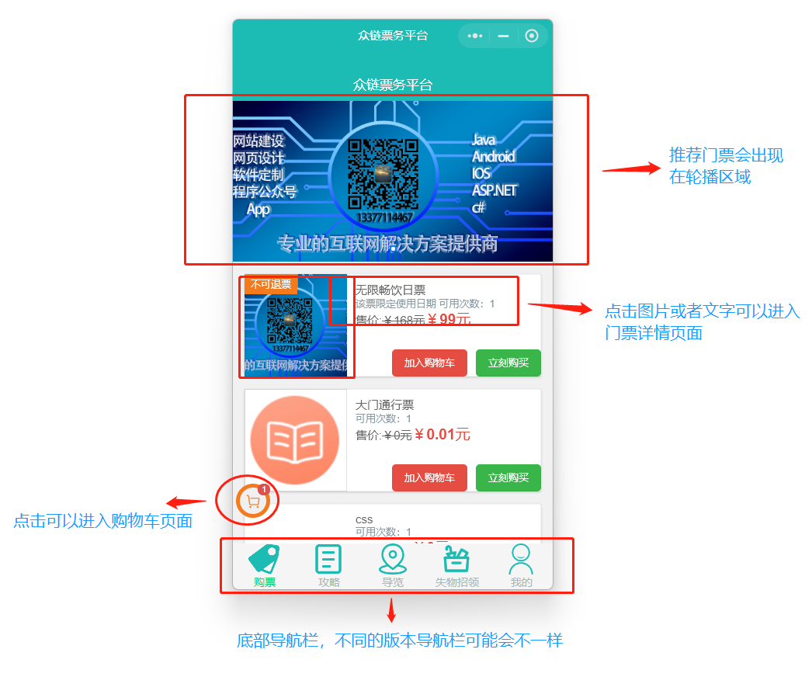
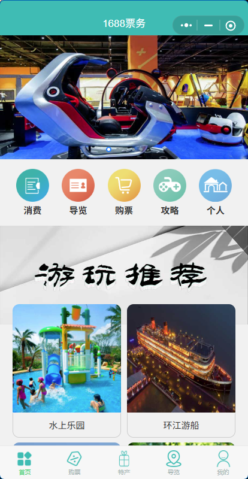
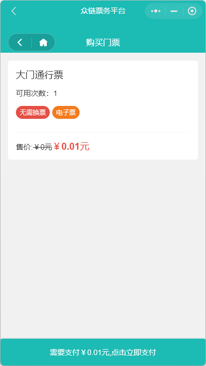
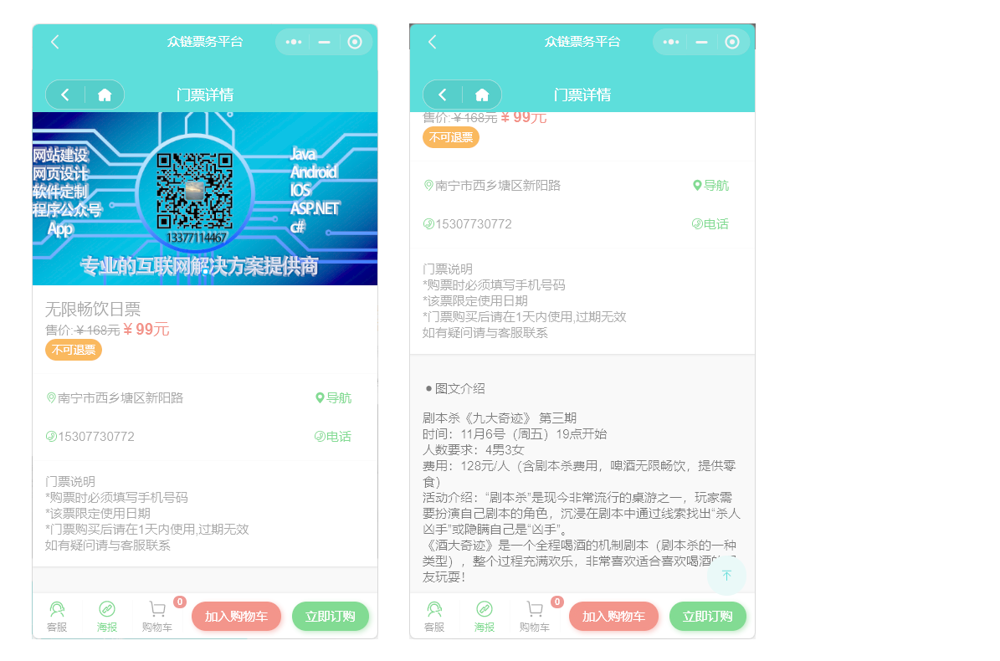
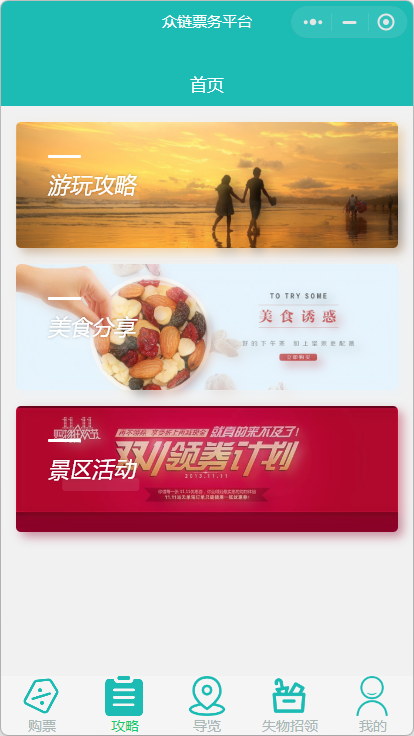
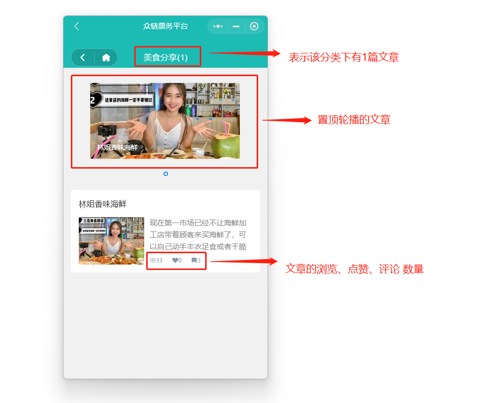
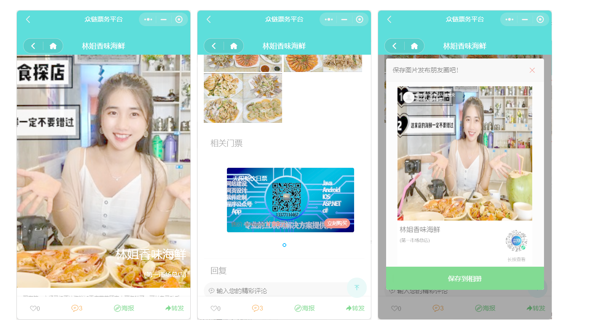
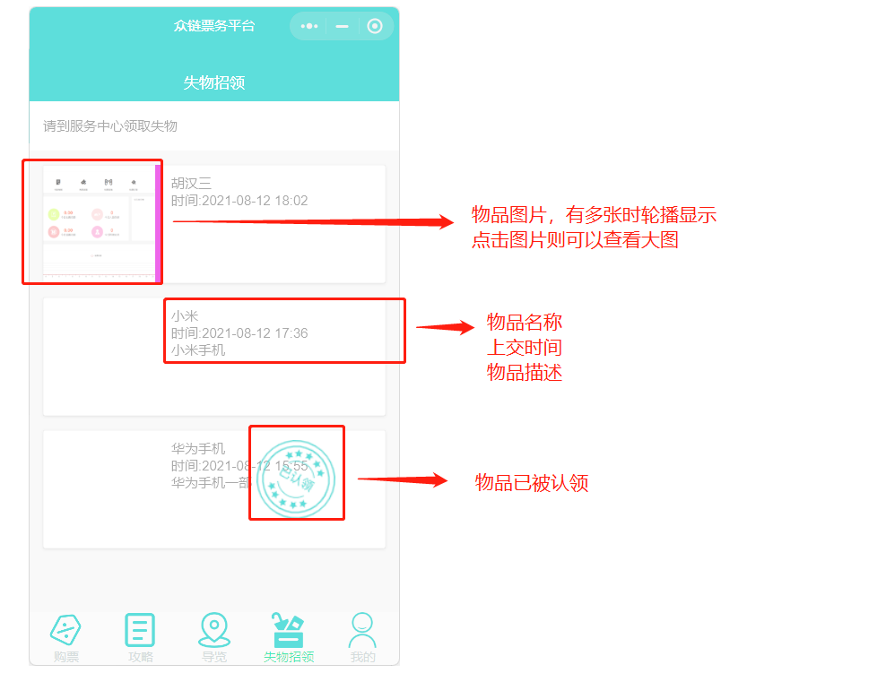
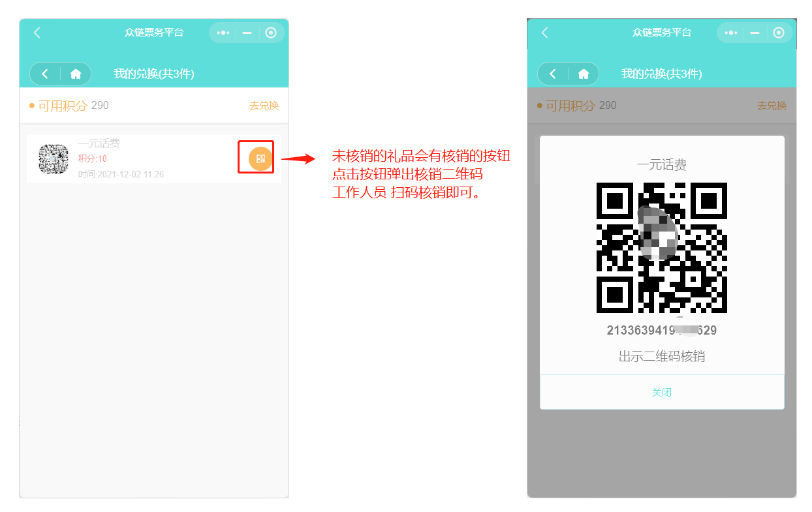
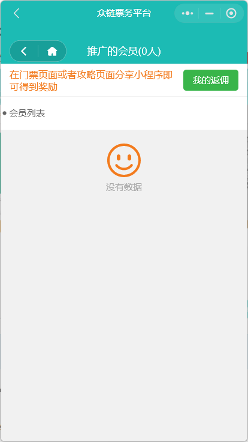

Mini Program Function Guide
Important: Before using the mini program's ticket selling function, you must first configure the corresponding ticket selling permissions for the mini program in the backend management terminal, otherwise the mini program terminal will not be able to sell tickets normally and will report an error.
Technical Description: This mini program is developed based on the Taro3 framework and can theoretically be compiled into mini programs for multiple mainstream platforms such as WeChat, Douyin, and Alipay. Currently, the standard version mainly provides the WeChat mini program version.
About the interface:
- Some of the screenshots in the document are from the PC version of the mini program, and the actual display effect on the mobile phone will be more beautiful and coordinated.
- We provide a complete mini program API document. If you feel that the current UI style does not match your own brand, you can carry out secondary development of the front-end page based on the API.
Home Page
The design of the home page is centered on ticket sales. The upper part focuses on recommending tickets in the form of a carousel, and the lower part is a list of tickets, which is convenient for users to quickly find and purchase.
 
Purchase Process
Users can purchase tickets in two ways: "Add to Cart" or "Buy Now".
- Add to Cart: After clicking, if the ticket requires filling in tourist information (such as name, phone number, travel date, etc.), an information input box will pop up at the bottom. After filling in, the ticket will be added to the shopping cart.

Tip: The tickets in the standard version of the mini program follow the "one ticket, one code" principle, so there is no quantity option when adding to the shopping cart. If you need to purchase multiple tickets, please repeat the "Add to Cart" operation. This logic can be modified in the customized version.
- Buy Now: After clicking, after filling in the necessary tourist information, you will be directly redirected to the order confirmation and payment page. 
Ticket Details
Click on the ticket picture or title to enter the ticket details page to view detailed graphic introductions, purchase instructions and other information.

Strategy
The content of this module corresponds to the "Information Management" in the background, which is used to publish scenic spot strategies, event articles, etc., to attract tourists with rich pictures and texts.
- Strategy Home Page: Articles are displayed in categories. Click on a category to enter the list page. 
- Article List Page: The top is a carousel of pinned articles, and the bottom is a list of regular articles. 
- Article Details Page: Supports social functions such as likes, comments, generating posters, and forwarding. If a ticket is associated when publishing in the background, a quick ticket purchase entrance will be displayed at the bottom of the article. 
Tour Guide
The tour guide function introduces the various scenic spots in the scenic area in the form of voice, pictures and texts, videos, etc. After entering the tour guide page, the voice commentary will usually be played automatically. Similar to the strategy, the scenic spots can also be associated with tickets, which is convenient for users to quickly purchase when listening to the explanation. The bottom menu provides convenient functions such as "phone" and "navigation".

Lost and Found
Used to publish and display information about items lost by tourists and sent to the service center, which is convenient for tourists to find.

My (Member Center)
The "My" page is the aggregation entrance for member-related functions, including the user's personal information, tickets, orders, points, promotion and other core functions.

My Tickets
Display the valid tickets purchased by the user. Click on the ticket to view the QR code, reservation information, etc. Supports filtering by status such as "To be used", "Used", and "Expired".

Points Mall
Points obtained by users through ticket purchases, check-ins, etc., can be exchanged for gifts here.
The rules for obtaining points need to be set in the "Marketing Management" in the background. The customized version can support postal gifts.

My Gifts
Display the gifts that the user has redeemed in the points mall. Users can go to the offline service desk to collect gifts with the verification code here.

Promotion Center
Members can develop downlines by sharing mini programs or personal posters. When friends purchase tickets through their shared links, members can get rebates. The promotion center is used to display promotion data and results.

Rebate Record
Records the details of all promotion rebates. The rebate will only be credited and support withdrawal after the corresponding ticket is verified and used. The withdrawal application needs to be reviewed and processed by the background.
Note: Not all tickets participate in rebates. You must fill in the commission amount for the ticket in the background ticket settings to get a rebate for promoting the ticket.

Unpaid Orders
Display orders that have been placed but not paid for. Users can select multiple tickets here to pay together. The system will regularly clean up expired unpaid orders.

Contact Customer Service
After clicking, you can directly pull up the online customer service dialogue window of the WeChat mini program.
Help / Company Information
These two entrances are usually configured as hyperlinks, which can jump to the specified external H5